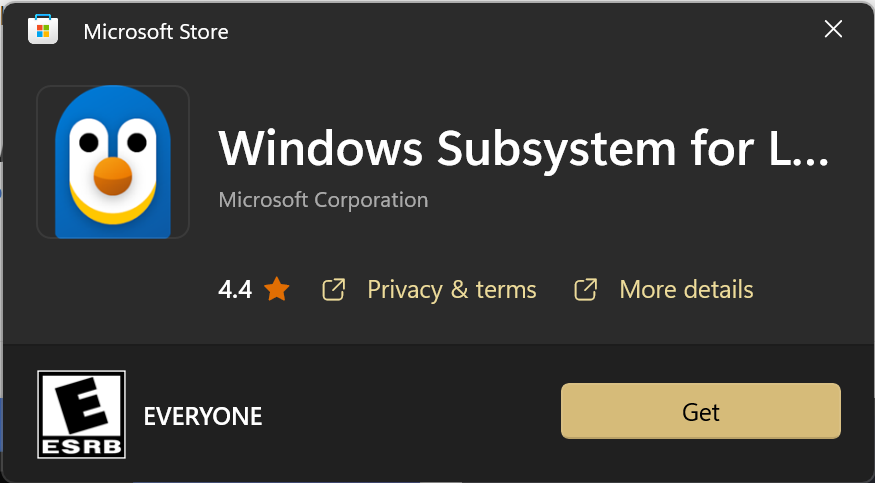
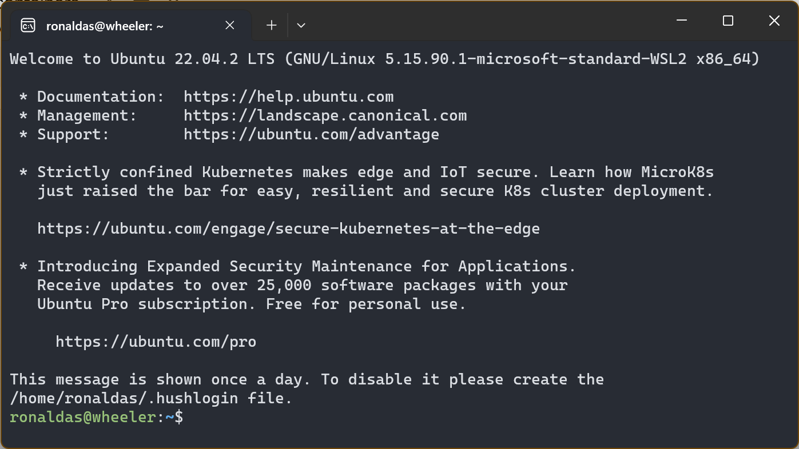
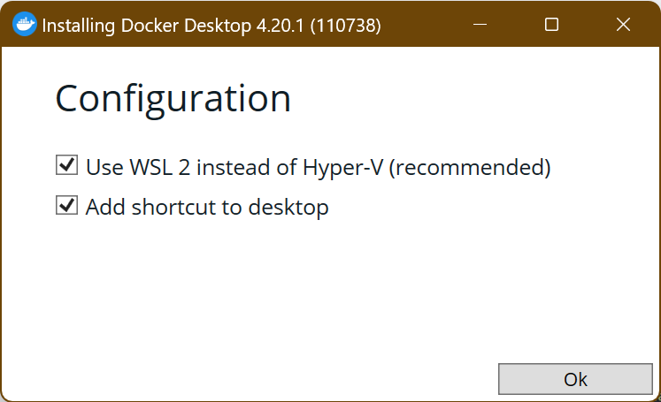
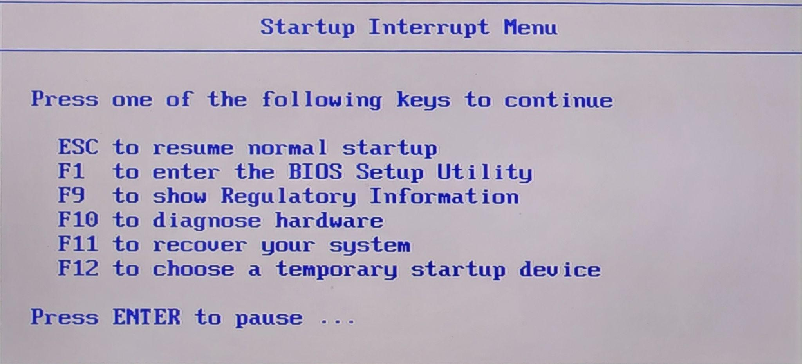
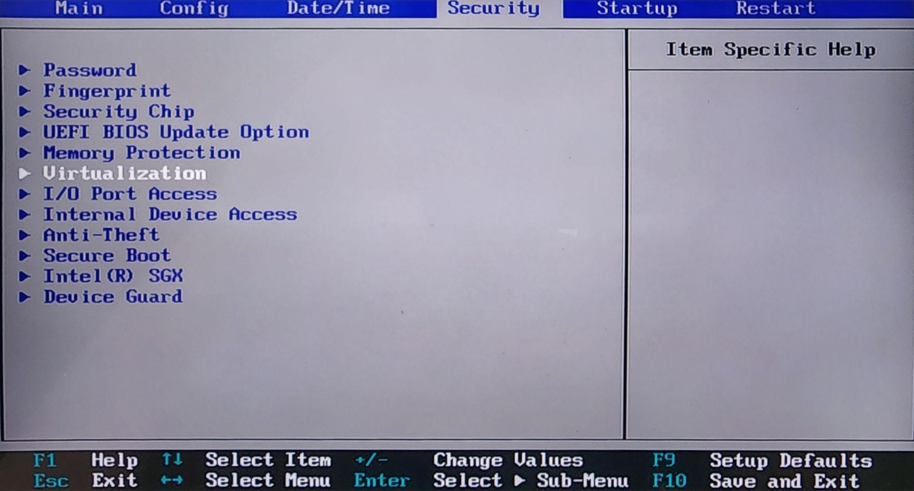
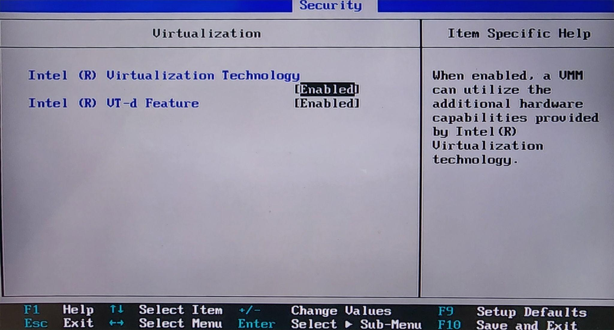
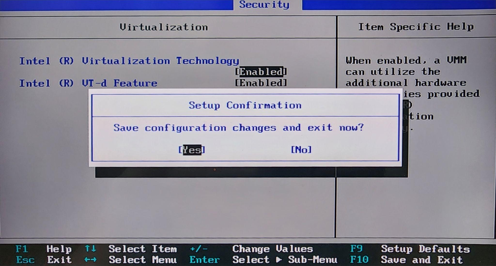

In this tutorial, we will set up Docker for your local machine.
Windows users:
First, we need to download the latest version of Docker. This can be done by visiting the link and downloading an installer for your system.
Follow the installation instructions on the .dmg file you downloaded
Follow the instructions found on this installation page.
Windows requires additional steps prior to the Docker installation.



In case WSL 2 doesn't work, another option is to enable Hyper-V in your BIOS instead.




Now that Docker is installed locally, you can follow the Dev Containers with VS Code to install the necessary extensions (if you haven't already) and run development containers outside of a remote environment.